Code
import seaborn as sns
data = [2.2, 2.8, 3.7, 5.3, 5.7]
sns.kdeplot(data);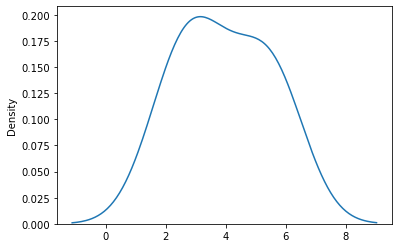
In the last lecture, we learned that density curves are smooth, continuous functions that represent a distribution of values. In this section, we’ll learn how to construct density curves using Kernel Density Estimation.
Kernel Density Estimation involves a technique called smoothing - a process applied to a distribution of values that allows us to analyze the more general structure of the dataset.
Many of the visualizations we learned during the last lecture are examples of this. Histograms are smoothed versions of one-dimensional rug plots, and hex plots are smoother alternatives to two-dimensional scatter plots. They remove the detail from individual observations so we can visualize the patterns in our distribution.
Kernel Density Estimation is a smoothing technique that allows us to estimate a density curve (also known as a probability density function) from a set of observations. There are a few steps in this process:
Suppose we have 5 data points: \([2.2, 2.8, 3.7, 5.3, 5.7]\). We wish to recreate the following Kernel Density Estimate:
import seaborn as sns
data = [2.2, 2.8, 3.7, 5.3, 5.7]
sns.kdeplot(data);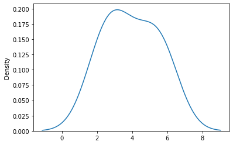
Let’s walk through each step to construct this density curve.
To begin generating a density curve, we need to choose a kernel and bandwidth value. What are these exactly? A kernel is a density curve itself, and the bandwidth is a measure of the kernel’s width. Recall that a valid density has an area of 1.
At each of our 5 points (depicted in the rug plot on the left), we’ve placed a Gaussian kernel with a bandwidth parameter of alpha = 1. We’ll explore what these are in the next section.
Rugplot of Data

Kernelized Data

Notice how these 5 kernels are density curves - meaning they each have an area of 1. In Step 3, we will be summing each these kernels, and we want the result to be a valid density that has an area of 1. Therefore, it makes sense to normalize our current set of kernels by multiplying each by \(\frac{1}{5}\).
Kernelized Data
Normalized Kernels
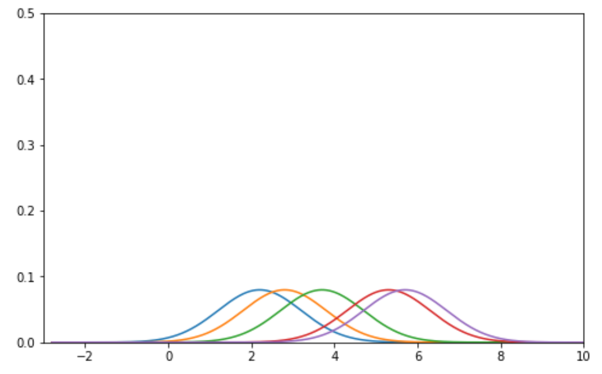
Our kernel density estimate (KDE) is the vertical sum of the normalized kernels along the x-axis. It is depicted below on the right.
Normalized Kernels
Kernel Density Estimate

A kernel (for our purposes) is a valid density function. This means it:
The most common kernel is the Gaussian kernel. The Gaussian kernel is equivalent to the Gaussian probability density function (the Normal distribution), centered at the observed value \(x_i\) with a standard deviation of \(\alpha\) (this is known as the bandwidth parameter).
\(K_a(x, x_i) = \frac{1}{\sqrt{2\pi\alpha^{2}}}e^{-\frac{(x-x_i)^{2}}{2a^{2}}}\)$
import numpy as np
import matplotlib.pyplot as plt
def gaussian_kernel(alpha, x, z):
return 1.0/np.sqrt(2. * np.pi * alpha**2) * np.exp(-(x - z) ** 2 / (2.0 * alpha**2))
xs = np.linspace(-5, 5, 200)
alpha = 1
kde_curve = [gaussian_kernel(alpha, x, 0) for x in xs]
plt.plot(xs, kde_curve);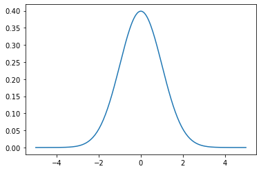
If you’ve taken a probability class, you’ll recognize that the mean of this Gaussian kernel is \(x_i\) and the standard deviation is \(\alpha\). Increasing \(\alpha\) - equivalently, the bandwidth - smoothens the density curve. Larger values of \(\alpha\) are typically easier to understand; however, we begin to lose important distributional information as \(\alpha\) increases.
Here is how adjusting \(\alpha\) affects a distribution in some variable from an arbitrary dataset.
Gaussian Kernel, Alpha = 0.1
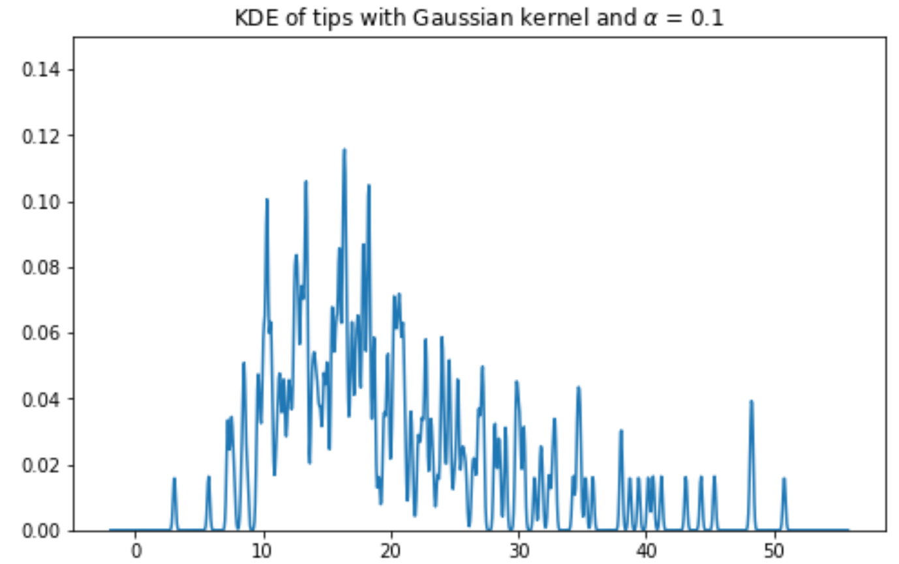
Gaussian Kernel, Alpha = 1
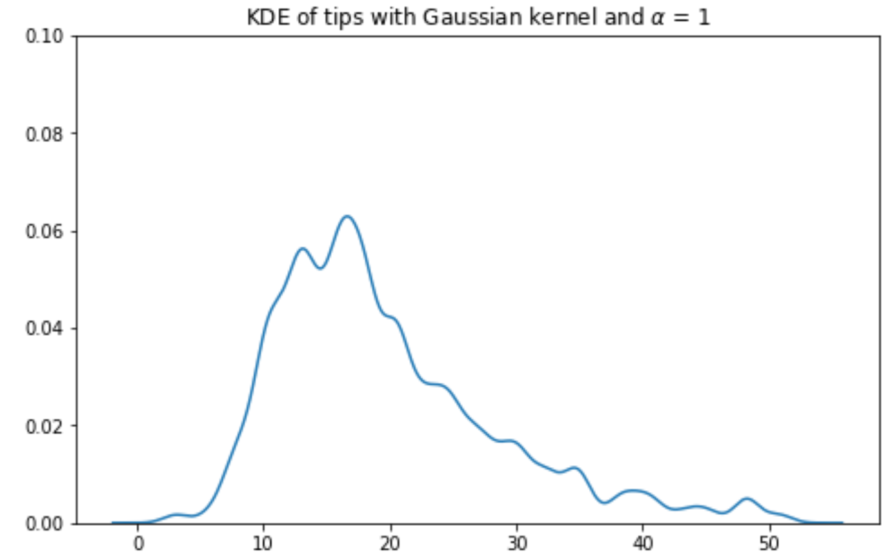
Gaussian Kernel, Alpha = 2

Gaussian Kernel, Alpha = 10
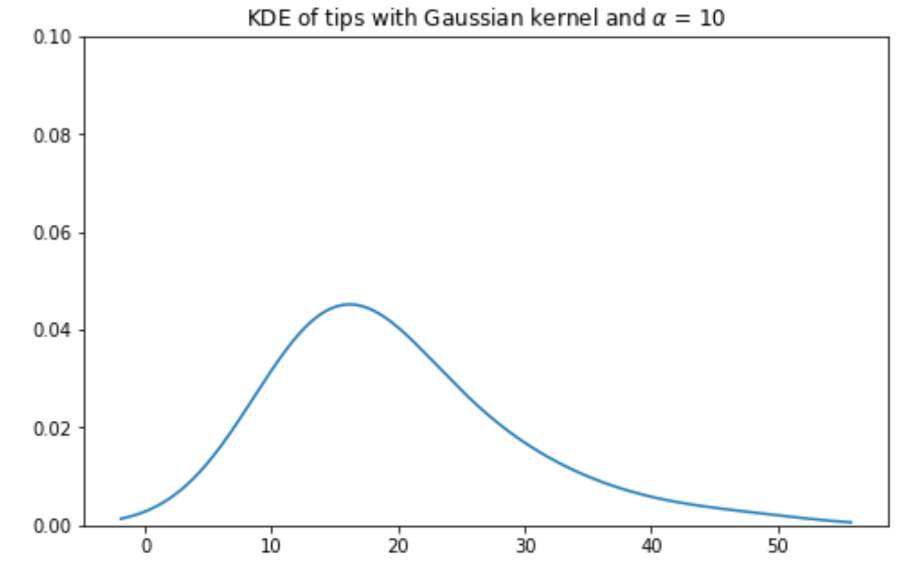
Another example of a kernel is the Boxcar kernel. The boxcar kernel assigns a uniform density to points within a “window” of the observation, and a density of 0 elsewhere.
\(K_a(x, x_i) = \begin{cases} \frac{1}{\alpha}, & |x - x_i| \le \frac{\alpha}{2}\\ 0, & \text{else } \end{cases}\)
def boxcar_kernel(alpha, x, z):
return (((x-z)>=-alpha/2)&((x-z)<=alpha/2))/alpha
xs = np.linspace(-5, 5, 200)
alpha=1
kde_curve = [boxcar_kernel(alpha, x, 0) for x in xs]
plt.plot(xs, kde_curve);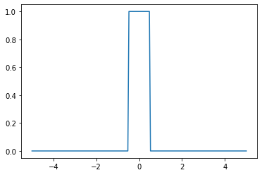
The diagram on the right is how the density curve for our 5 point dataset would have looked had we used the Boxcar kernel with bandwidth \(\alpha\) = 1.
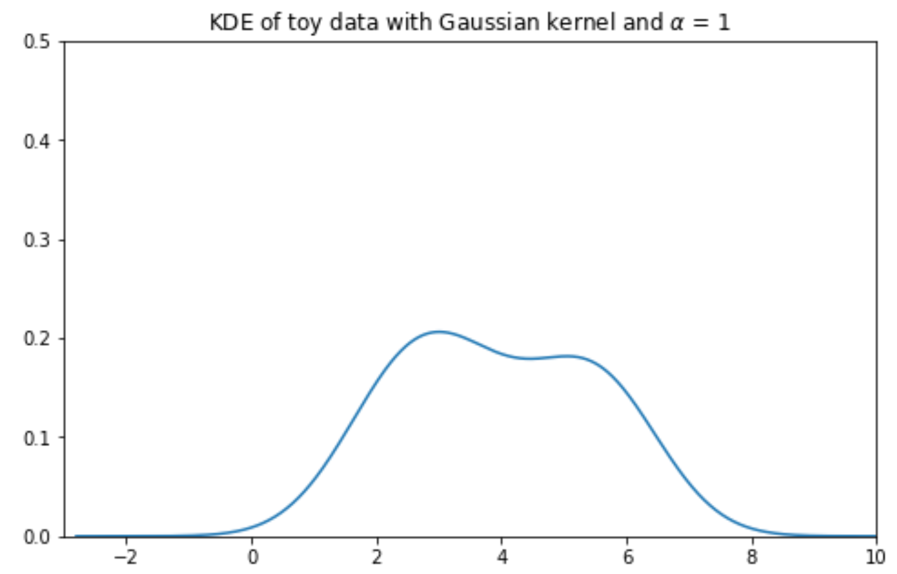
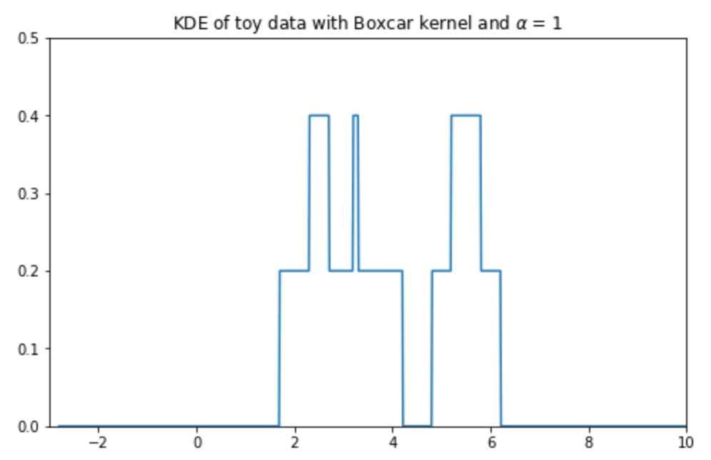
This section marks a pivot to the second major topic of this lecture - visualization theory. We’ll discuss the abstract nature of visualizations, which will help us make informed decisions to construct them.
Remember, we had two goals for visualizing data. This section is particularly important in motivating
There are various channels of information in visualizations - these include encodings, color, and scale, to name a few. In constructing good visuals, we should utilize these channels to convey information that answers our questions.
For example, we learned a few ways to picture a distribution: rugplots, KDEs, and histograms. Neither is strictle better than any other; they all convey varying levels of detail, and some may be more advantageous depending on the application.
One detail that we may have overlooked in our earlier discussion of rugplots is the importance of encodings. Rugplots are effective visuals because they utilize encodings in line thickness to convey frequency. Consider the following diagram:
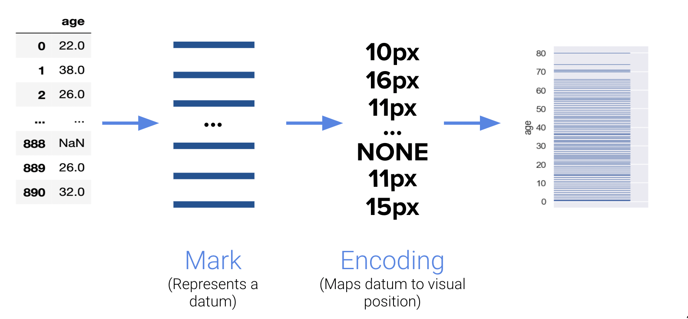
Encodings are useful in representing complex